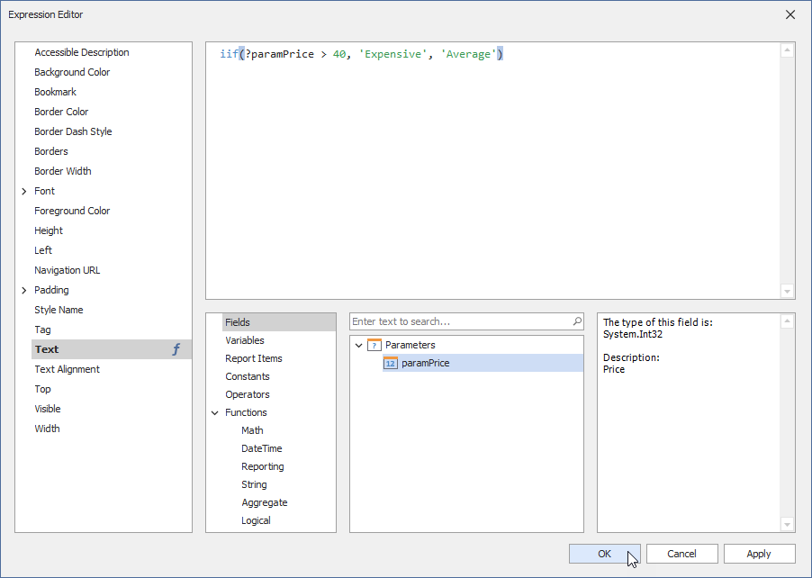

Use Report Parameters
Report parameters allow you to filter report data dynamically.
Supported Features/Capabilities
Built-in parameter types (String, Date, Number, Boolean, and GUID)
Multi-value parameters (filter report data against multiple criteria)
Cascading parameters (filter a parameter’s value list against selections made in a different parameter)
Date-range parameters (filter report data against a specified time period)
Static parameter values (create pre-defined (static) parameter value lists)
Dynamic parameter values (load parameter values from a data source dynamically)
Refer to the following documentation section for more details: Create a Report Parameter.
Reference Report Parameters
Once you create a parameter, you can reference it in your report’s filter string to filter underlying report data.

You can also reference the parameter in a report control’s expression or its Text property.

When used in this manner, you can filter data displayed within an individual report control (such as Label) conditionally.
You can also bind data source parameters to report parameters and filter data at the data source level. Refer to the following help topic for more information: Reference Report Parameters.
Specify Parameter Values
Available report parameters appear within a report’s Print Preview window (inside the Parameters panel). Use this panel to specify desired parameter values: